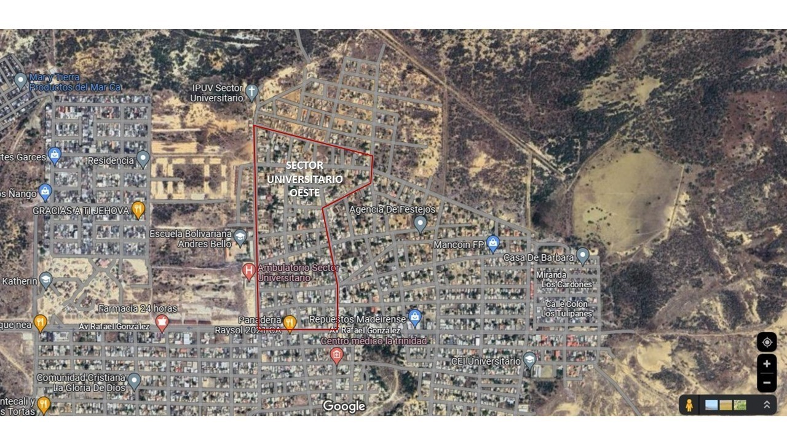

La comunidad Sector Universitario Oeste es una de las comunidades que conforman el Municipio Carirubana, Punto Fijo, Estado Falcón.
El Sector Universitario debe su nombre a un grupo de estudiantes, quienes en el año de 1986 se encontraban apoyando el asentamiento de varias personas
necesitadas de una vivienda propia y digna, ya que en aquel entonces existía un déficit habitacional y fuertes problemas económicos en el país.
Los inicios de la Comunidad junto a las comunidades aledañas, se remontan al comienzo de la década de los años 80. Tras el fallido “Proyecto Habitacional
Punto Fijo II” (el cual se encuentra ubicado en lo que hoy en día es la Urb. 12 de Octubre y la Urb. María Auxiliadora) y la acentuación de la crisis económica
en Venezuela, muchas familias esperaban que el gobierno brindara soluciones habitacionales a la población.
Sin embargo, el problema habitacional que se vivía, aunado a los rumores de
posibles invasiones a los terrenos en donde la contratista encargada de la construcción del Hospital Dr. Rafael Calles Sierra guardaba sus maquinarias,
motivó a vaias familias a asentarse en lo que actualmente se conoce como el Sector Universitario. A pesar de que las condiciones para las mismas no era la adecuada,
la población siguió creciendo y organizandose. Así fue como la voz de los habitantes fue escucada y con ello se concretaron varios proyectos, como un ambulatorio médico,
calles asfaltadas y otras mejoras para la comunidad; al mismo tiempo que fueron surgiendo nuevos comercios como bodegas, panaderías y verdulerias.Finalmente, se conformaron
los Consejos Comunales que estarían a cargo de los sectores consolidados.

Por si quieres visitarnos . . .
La comunidad Sector Universitario Oeste se encuentra localizada en el Estado Falcón, especificamnete en el Municipio Carirubana, Punto Fijo.
Actualmente se encuentra conformado por 16 manzanas o cuadras, las cuales son dirigidas por jefes de calle y un jefe de comunidad.
Misión
Promover y consolidar la democracia participativa y protagónica, mediante la promoción y el fortalecimiento de todas aquellas expresiones
organizativas y comunitarias que propicien el ejercicio de la corresponsabilidad social en la gestión pública.
Visión
Ser la instancia incluyente de participación activa que desarrolle, vincule y dirija todos los proyectos
(ecnonómico, educativo, cultural, deportivo, tecnológico, entre otros) dirigido a impulsar el fortalecimiento de la comunidad.